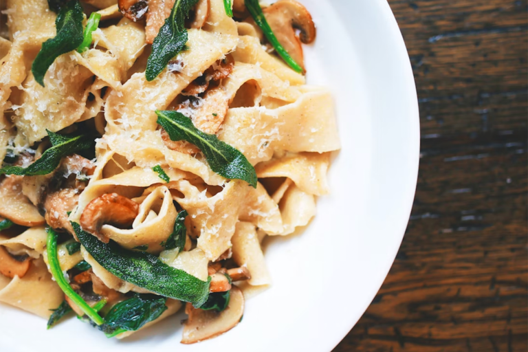
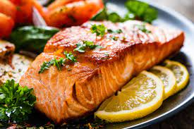
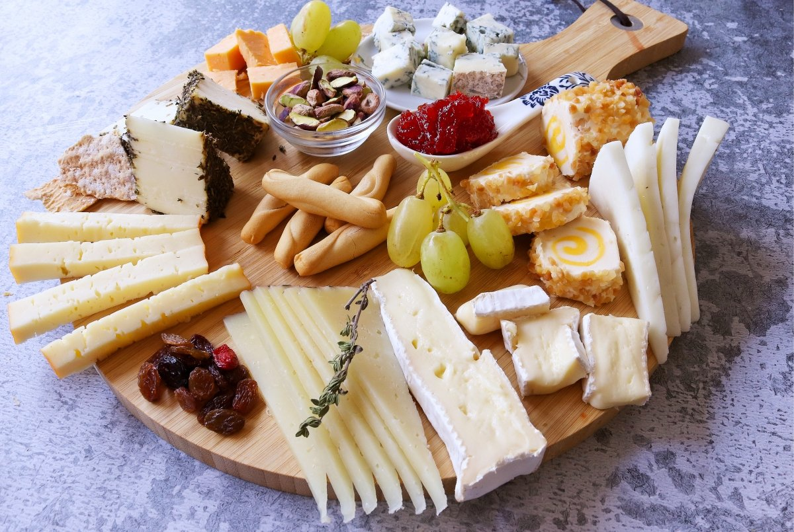
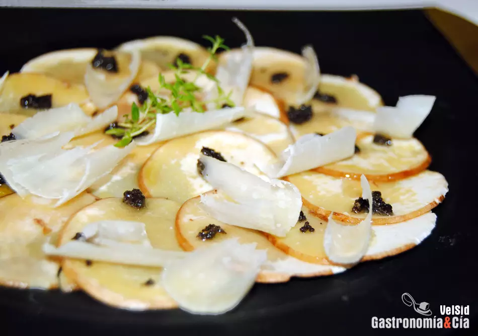

Una de las principales características del Pinot Noir es su gran versatilidad y delicadeza a la hora de crear maridajes. Todo dependerá de su estilo: qué tan moderados son sus taninos o qué nivel de acidez tiene, son factores relevantes a la hora de escoger un plato para acompañarlo. Aquí te contamos cómo lograr un match exitoso.
El pinot noir es una cepa que no pasa desapercibida. Primero, llama la atención por su color un tanto traslúcido, mucho más claro que un vino tinto común pero más oscuro que un rosado. Luego, en la boca, destaca por sus taninos ligeros y su sabor a frutas que recuerdan a las frutillas, frambuesas, cerezas y flores como las violetas. Además, por cierto, de su brillante acidez, elegancia y final suave. Se trata de vinos delicados, que cuando tienen guarda en madera también entregan los aromas que le aportan los barriles como la vainilla o el ahumado. Por otro lado, cuando la guarda en barricas se extiende, estos desarrollan notas complejas a setas y tierra.
Cuando se trata de pinot noir muy jugosos, jóvenes y que no tienen guarda en madera, hay ciertas preparaciones como las terrinas, pates, charcutería y verduras verdes grilladas como los espárragos (típicos acompañamientos para los pinot de la Borgoña), que no fallan. La acidez del vino ayudará a cortar la grasa de la comida, limpiando el paladar para seguir disfrutando bocado tras bocado. Las notas verdes de los vegetales, por su parte, se complementarán con los aromas herbales que este vino ofrece.

Pero cuando se trata de variedades en las que sí se utilizan barriles de madera para su guarda, el pinot noir se vuelve un poco más complejo. Carnes blancas como el pollo, mariscos e incluso cordero o cortes grasos como las mollejas, pastas con salsas de champiñones y marquesos jóvenes son algunas elecciones que te permitirán irte a la segura con vinos tales como Marqués de Casa Concha Pinot Noir o Amelia Pinot Noir. Provenientes de un clima más fresco como es el Valle del Limarí, ambos destacan por su tensión, carácter mineral y una especial delicadeza, perfectos para acompañar este tipo de platos con elegancia y frescor.
Por su parte pinot noirs que son más dulces, tánicos, terrosos y alcohólicos que han sido producidos en climas más cálidos como el del Valle del Bío Bío, acompañan muy bien a platos con un toque especiado como carnes de pato, cerdo desmenuzado, codorniz, venado o pescados de sabores fuertes como el salmón o el atún. Más todavía si se acentúa el dulzor de la mezcla con ingredientes como los higos y ciruelas; si se incluyen hierbas como el tomillo; quesos como el Brie; o ya derechamente cacerolas o platos de cocción lenta como el Beef Bourguignon. Puedes hacer la prueba con Marqués de Casa Concha Edición Limitada Pinot Noir, que viene precisamente de esa zona en el sur de Chile y que ofrece taninos más presentes.
Para los vegetarianos, productos con notas terrosas como las lentejas, betarragas asadas, espinacas salteadas, arroces con setas y trufas pueden ser excelentes opciones. Un vino para partir experimentando podría ser Casillero del Diablo Pinot Noir. ¿Estás listo para intentarlo?
Nuestro Maridaje Perfecto
Salmón
Preparado de la manera que más te guste, el salmón tiene un sabor fuerte que puede chocar con los vinos tintos que tienen taninos firmes, pero no con el Pinot Noir. Acompaña esa cena de salmón con una copa de Pinot Noir y verás como brilla. Ahora, si buscas una recomendación que lo lleve a un nivel superior, el salmón a la parrilla acompañará de manera extraordinaria los Pinot Noir más afrutados, como el chileno.

Quesos
¿Pensando en una tabla de picoteo? ¡No dejes de incluir quesos brie y gouda! La acidez y notas afrutadas del Pinot Noir se combinará perfectamente con estos quesos más bien salados. Además si quieres complementar tu tabla picoteo con otras frutas que realcen el vino y el queso, puedes agregar frutillas, cerezas y arándanos. ¡Qué lo disfrutes!

Pizza
Cuando te decíamos que este vino está hecho para momentos relajados, te lo decíamos en serio: el Pinot Noir es el compañero perfecto para una noche de pizza
(sobre todo si es de pepperoni). Lo salado de la pizza resaltan las notas del Pinot Noir, al mismo tiempo que la acidez de este vino ayuda a controlar todo lo grasiento que puede ser el queso y el pepperoni.
Champiñones, hongos, portobellos o trufas
Los sabores frutales del Pinot Noir realzan los sabores más terrosos de los champiñones. Y a medida que los Pinot Noir envejecen pueden desarrollar notas que realzan aún más los sabores naturales de los hongos, ya sea que estés acompañándolos con champiñones, portobellos o trufas.
